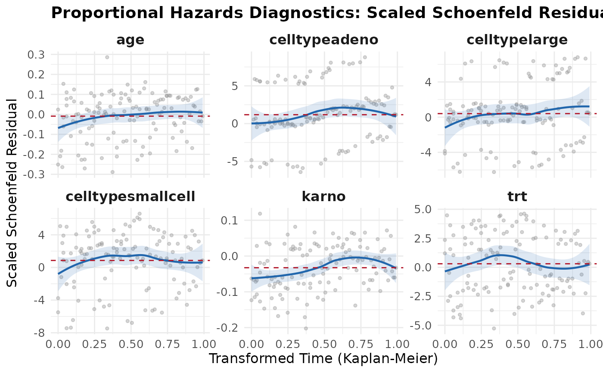
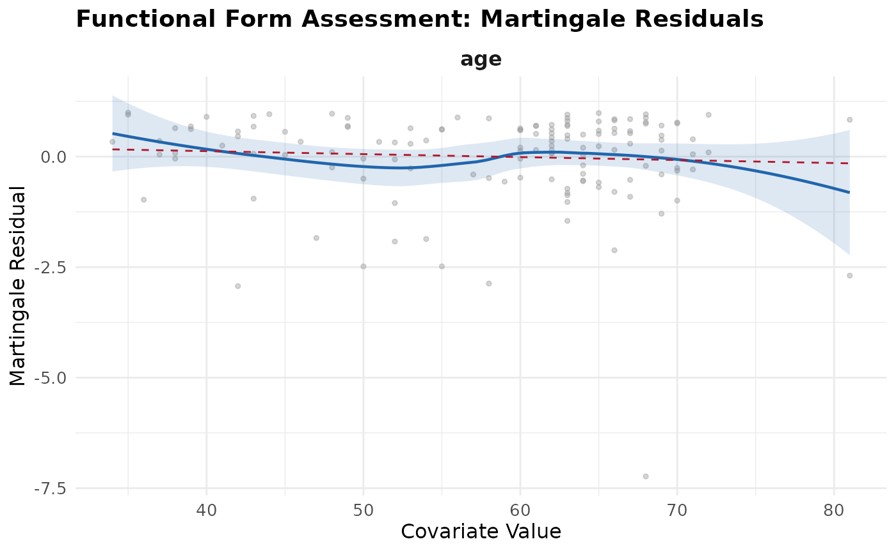
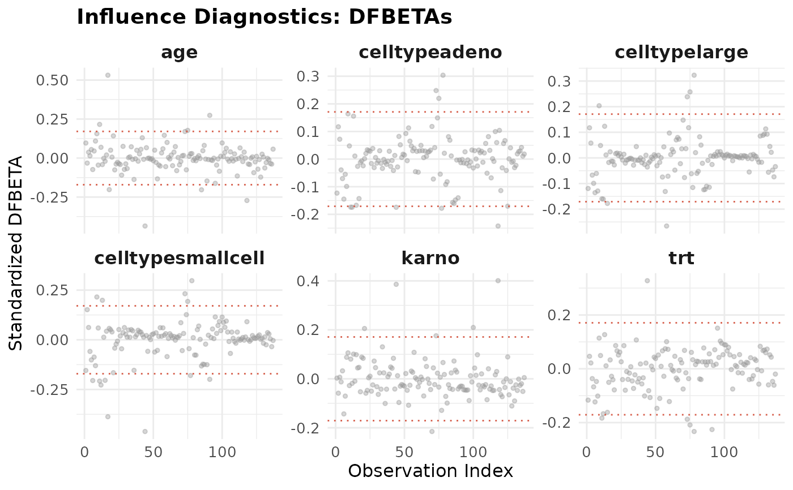

plot.survAudit.RdProduces ggplot2-based diagnostic displays for a survAudit object.
Five diagnostic panels are available:
Proportional Hazards (which = "ph"): Plots scaled
Schoenfeld residuals against transformed time for each covariate, with a
LOESS smoother and horizontal reference lines at the estimated coefficients.
Functional Form (which = "functional"): Plots
martingale residuals from a null (covariate-free) Cox model against
each continuous covariate, with a LOESS smoother and a linear fit
reference line to screen for non-linear effects.
Influence Diagnostics (which = "influence"): Plots
standardized DFBETA statistics for each covariate across observation
indices, with diagnostic threshold reference lines at
\(\pm 2 / \sqrt{n}\).
Outlier Assessment (which = "outliers"): A four-panel
display showing martingale, deviance, log-odds, and normal deviate residuals
against the linear predictor, with reference threshold lines.
Global Goodness-of-Fit (which = "gof"): Plots the cumulative
hazard of the Cox-Snell residuals against the residuals themselves, with a
dashed 45-degree reference line.
# S3 method for class 'survAudit'
plot(
x,
which = c("ph", "functional", "influence", "outliers", "gof"),
vars = NULL,
max_points = 5000L,
ask = interactive(),
...
)An object of class survAudit.
Character vector specifying which plots to produce.
Subset of c("ph", "functional", "influence", "outliers", "gof").
Defaults to all available diagnostics.
Optional character or numeric vector specifying covariates to
include in covariate-specific plots ("ph", "functional", and
"influence"). If NULL (the default), all available covariates
are included.
Integer specifying the maximum number of observations to
display per panel (and to use for smoothing). Defaults to 5000. If NULL
or non-positive, all observations are used without subsampling.
Logical. If TRUE (the default in interactive
sessions), the user is prompted between plots.
Additional arguments (currently ignored).
A ggplot object (if a single plot was requested) or a
named list of ggplot objects (if multiple plots were produced),
invisibly.
Large-Sample Subsampling:
For large datasets (e.g., \(n > 5000\)), plot.survAudit subsamples
data to max_points observations per panel (default 5000) to prevent
overplotting and rendering delays:
"ph" and "functional": Randomly subsamples points
per covariate; smoothers are computed on this subsample for fast display.
"influence" and "outliers": Extreme-preserving
subsampling. All observations exceeding diagnostic thresholds
(\(\pm 2/\sqrt{n}\) for DFBETAs, \(\pm 1.96\) for deviance and normal deviate,
\(\pm 3.66\) for log-odds, and \(|r| > 2\) for martingale) are strictly
retained; only non-flagged points are subsampled.
"gof": Systematic quantile subsampling across the
Cox-Snell cumulative hazard curve.
A plot caption indicates whenever subsampling is active. To display all points
without subsampling, set max_points = NULL.
library(survival)
fit <- coxph(Surv(time, status) ~ trt + celltype + karno + age,
data = veteran)
audit <- survAudit(fit, data = veteran)
plot(audit, which = "ph")

plot(audit, which = "functional", vars = "age")

plot(audit, which = "influence", max_points = 500)
